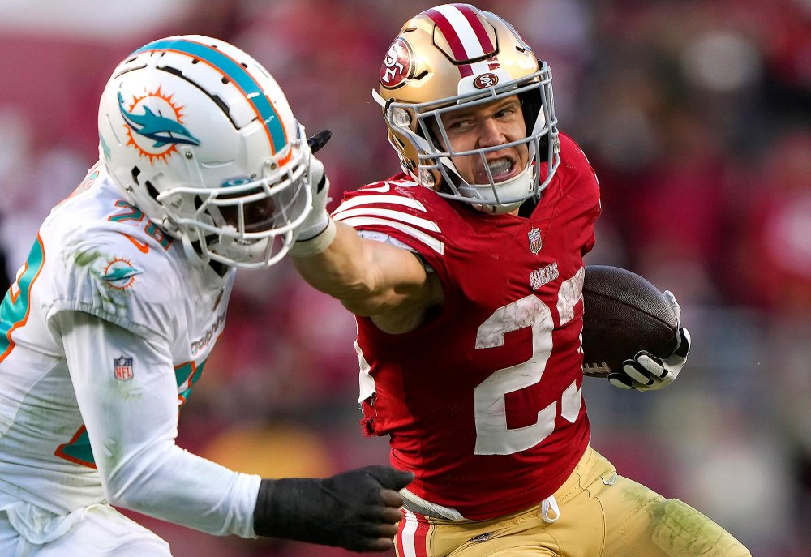
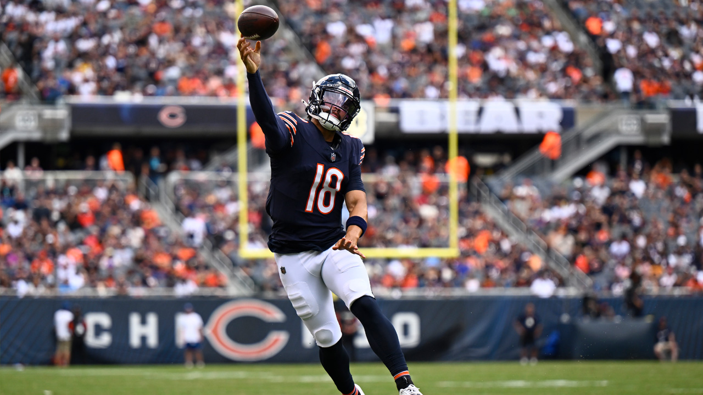
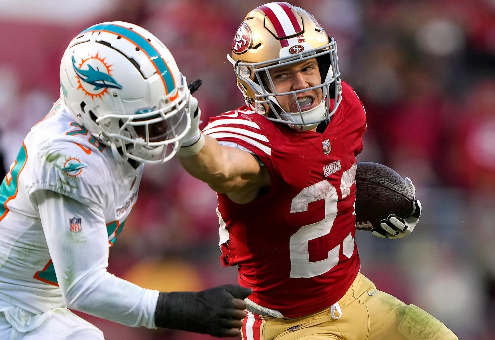
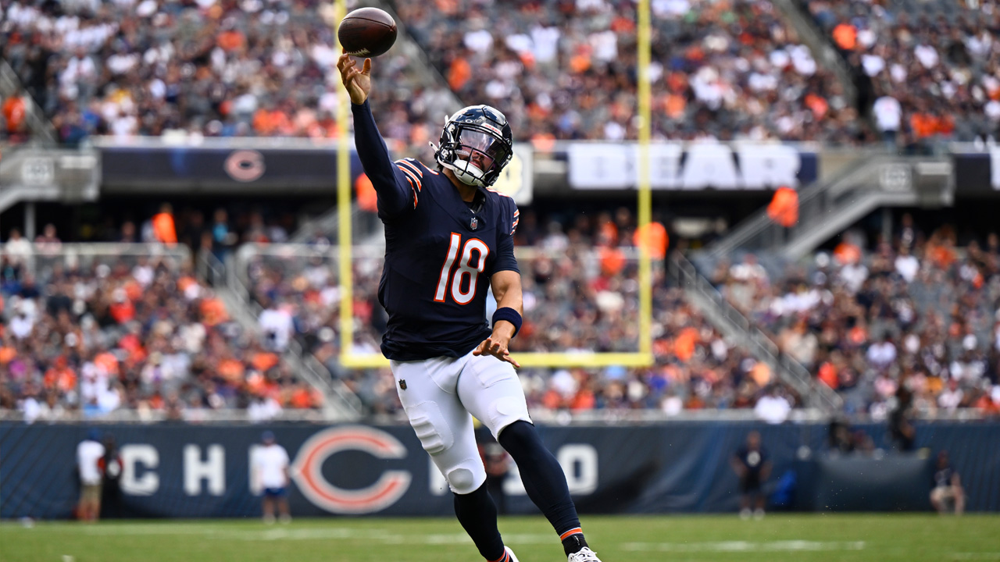
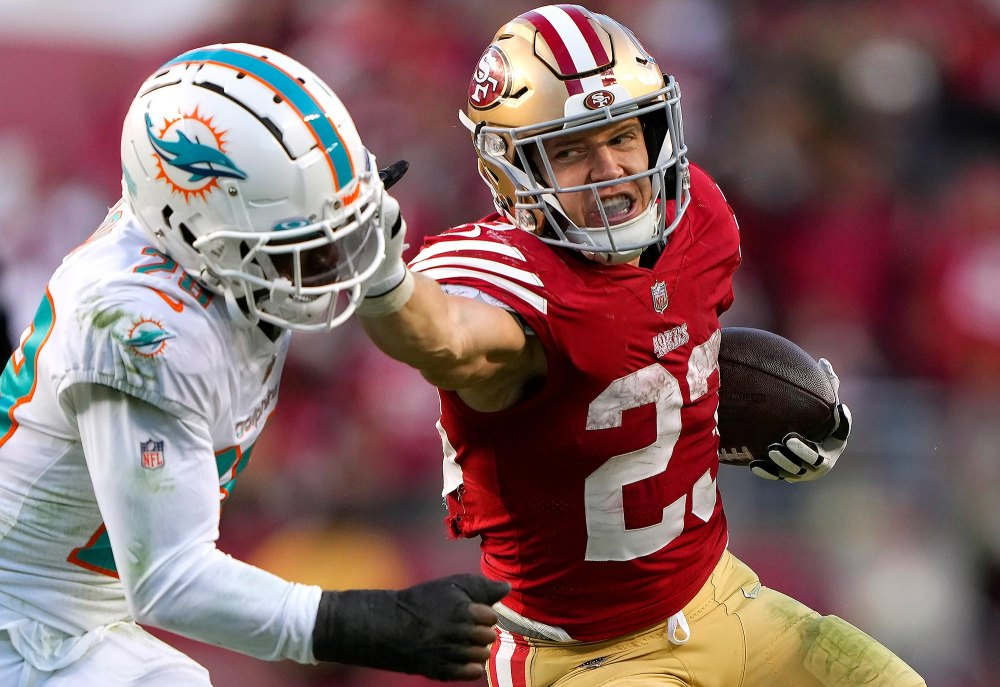
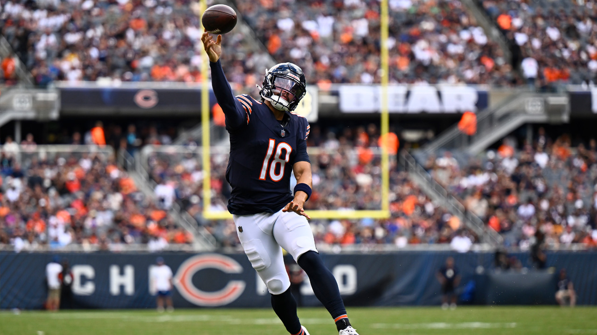
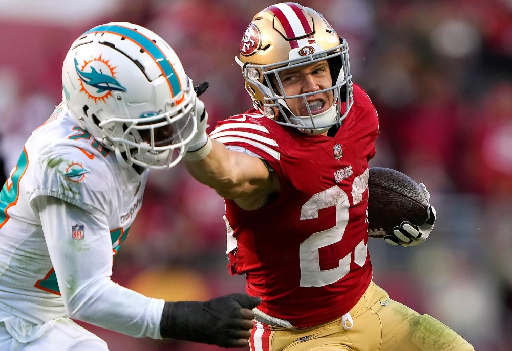
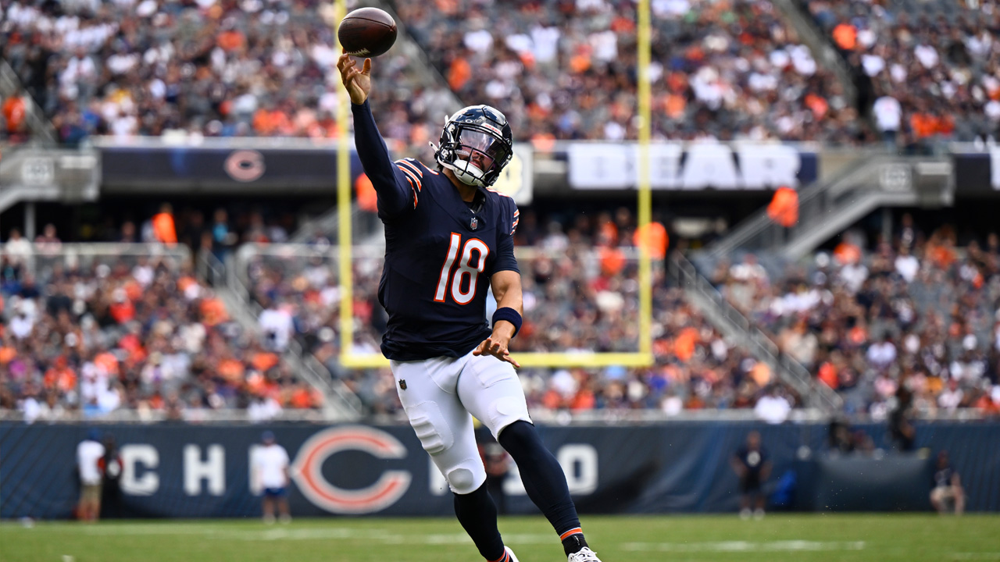

Wesley's
Fantasy Football
Rankings 2024
 







Hi everyone and welcome to my Fantasy Football Predictive Model for the 2024 season! My name is Wesley and I'm an avid fooball fan and fantasy football player, as well as commissioner of my league. This website is the culmination of a personal project I've been working on that was inspired from my love of fantasy football. The rankings you see below are the reuslt of extensive data scraping, cleaning, and machine learning experimentation aimed at predicting fantasy football points for players. Feel free to use these rankings during your draft and hopefully they'll give you an edge over your fellow league mates!